S5 · Carte interactive
Carte de Leonida
Filtrez 28 lieux par région et par type, cherchez un nom, préparez trois itinéraires — et sachez une fois pour toutes qu'aucune carte interactive officielle n'existe.
Carte interactive — 28 lieux, 6 régions
Cette carte est un schéma éditorial, dessiné en SVG dans la page : elle ne reprend aucune donnée de jeu et ne prétend pas placer les lieux au mètre près. Elle sert à filtrer, chercher et se repérer mentalement avant et après le lancement. Filtrez par région ou par type, ou tapez un nom.
Schéma de Leonida · positions indicatives
28 / 28 lieux affichés
- Collectible
- Activité
- Repère
- Zone à risque
Filtrer
Aucun lieu pour ce filtre.
Sélectionnez un point sur la carte ou dans la liste pour voir son détail.
MAP-17
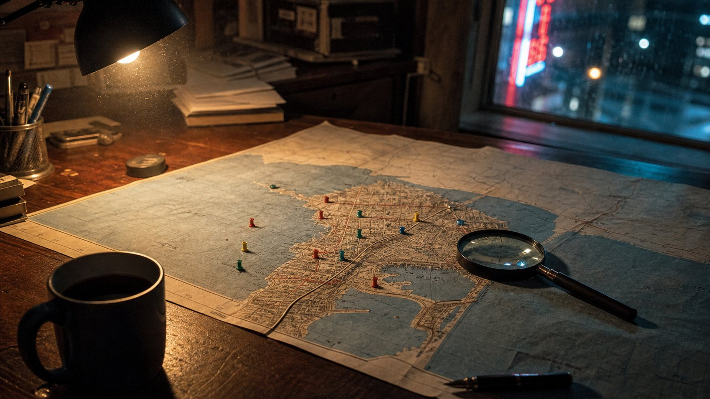
La carte officielle : ce que Rockstar publie vraiment
Point important, souvent déformé par les titres : il n'existe pas de carte interactive officielle. Le 3 novembre 2026, le Newswire a annoncé pour le 19 novembre une carte et un poster de jaquette à imprimer, gratuits en téléchargement, puis une version physique double face vendue 0,99 $ en boutique Rockstar, ou offerte avec un achat. MAP-16
| Source | Nature | Fiabilité |
|---|---|---|
| Rockstar Newswire, 03/11 | Carte et poster imprimables, gratuits le 19/11 | PRESSE · 18/11 |
| Rockstar Store | Poster double face à 0,99 $, offert avec un achat | PRESSE · 18/11 |
| Atlas communautaires | Cartes interactives, base YANIS (CC BY 4.0) | PRESSE · 18/11 |
| Six comtés « Vice-Dale, Leonard… » | Noms issus d'un build de 2023 | NON CONFIRMÉ |
Les vraies cartes de Leonida, à l'échelle
Le schéma SVG plus haut sert à filtrer et à se repérer. Mais pour voir Leonida — la forme de l'archipel, la place réelle de Vice City, la longueur des Keys — rien ne remplace une carte complète. En voici trois, avec leur statut affiché sans ambiguïté.
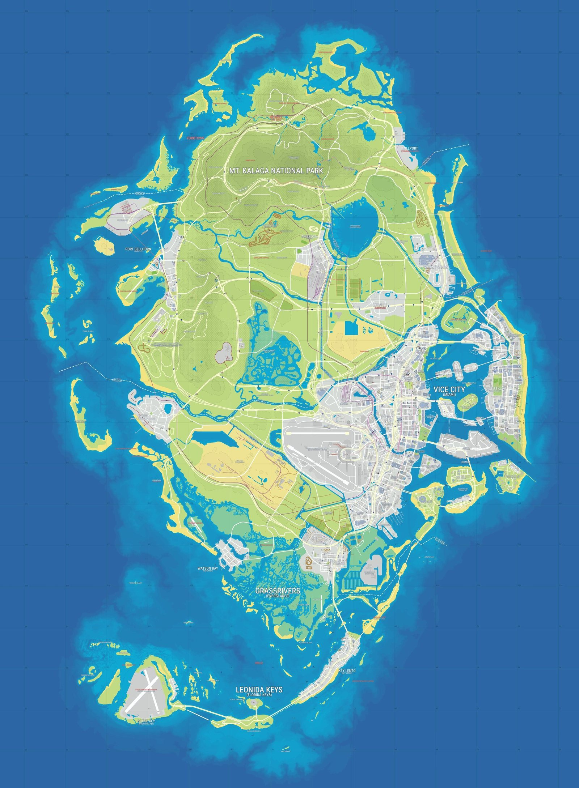
La version quadrillée, pour situer
La même carte, découpée en carrés et en repères de quartier : c'est la version qui sert à décrire une position (« au nord de Vice Beach, à deux blocs de la marina ») sans prétendre à des coordonnées de jeu.
La carte communautaire YANIS, pour les repères
La reconstruction de la communauté, aujourd'hui en version 10, ajoute routes, bâtiments et points confirmés. C'est elle qui alimente la plupart des cartes interactives de fans.
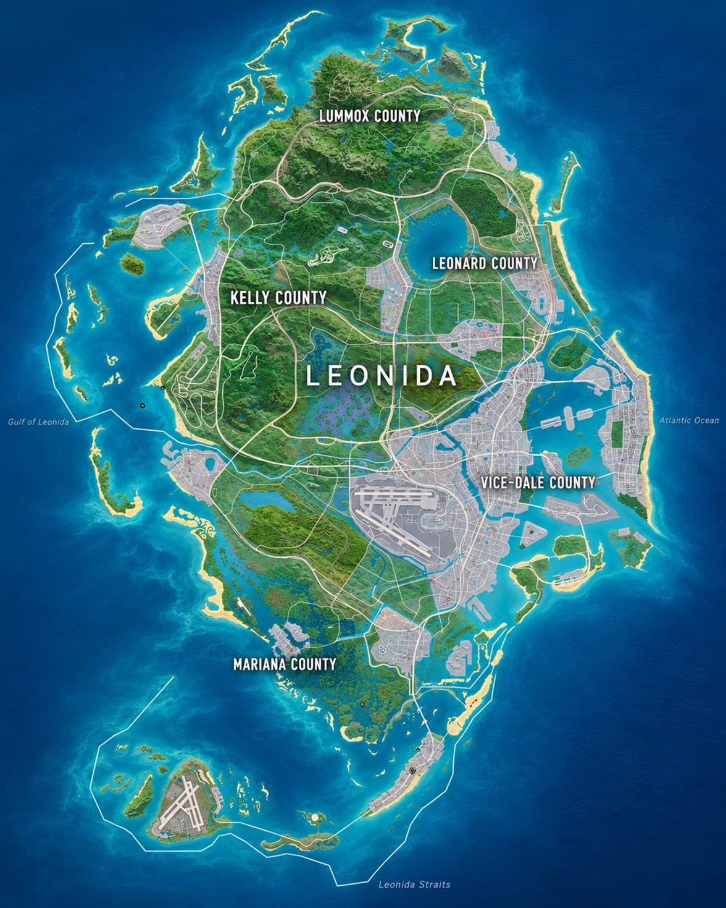
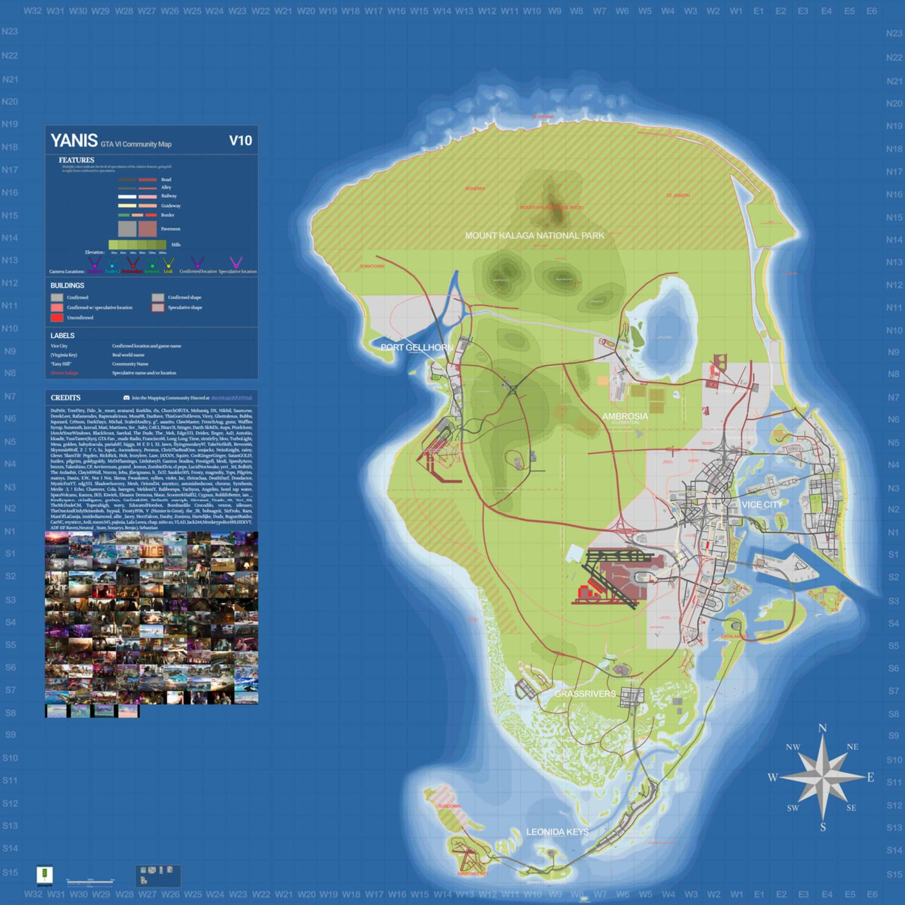
Les cartes interactives qui valent le détour
| Site | Ce qu'il apporte | Statut |
|---|---|---|
| gta-6-map.com | 889 lieux, 454 pages de lieux, base GTADB, coche « trouvé » stockée sur l'appareil | PRESSE · 18/11 |
| sixintelhq.com/map | Filtres par couche, repères de véhicules rares, itinéraires | PRESSE · 18/11 |
| mapgta6.org | Chaque point est étiqueté par preuve : média officiel, recherche communautaire, vérification en jeu | PRESSE · 18/11 |
| mapheist.com | Variante de la base YANIS avec les mêmes repères, interface différente | PRESSE · 18/11 |
Lire la carte comme un joueur, pas comme un touriste
La carte de Leonida récompense une lecture par couloirs, pas par points d'intérêt. Trois principes suffisent à éviter 90 % des détours inutiles — et ils changent la façon de choisir une planque.
1. Les ponts sont des points de passage obligés
Vice City est une île : les accès se comptent sur les doigts d'une main. Une poursuite se gagne rarement en ligne droite, presque toujours en choisissant le bon pont — et en sachant lequel on abandonne.
2. Les Grassrivers coupent le trajet
La mangrove n'est pas un décor : en bateau ou en jet-ski, elle relie des zones que la route contourne. C'est le raccourci le plus sous-estimé de la carte, à condition d'accepter de perdre la voiture.
3. Le relief décide de la fuite
À l'intérieur, les collines et les routes sinueuses cassent les lignes de vue : c'est là que les hélicoptères perdent leur avantage, pas en ville où tout est visible depuis le ciel.
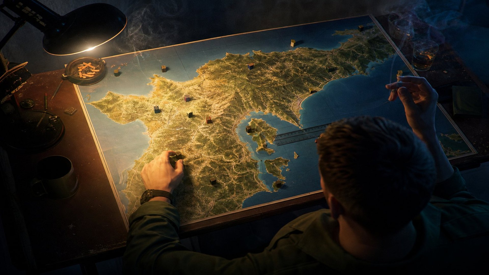
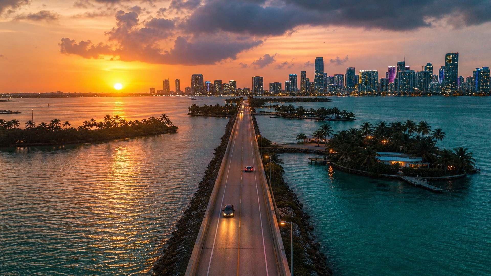
Les six régions nommées
Rockstar a nommé six destinations et décrit Leonida comme environ deux fois GTA V et trois fois la zone jouable de Red Dead Redemption 2, sans publier de kilomètres carrés. MAP-19
Vice City
8 lieux dans la carte ci-dessous.
Leonida Keys
4 lieux dans la carte ci-dessous.
Grassrivers
4 lieux dans la carte ci-dessous.
Port Gellhorn
4 lieux dans la carte ci-dessous.
Ambrosia
4 lieux dans la carte ci-dessous.
Mount Kalaga
4 lieux dans la carte ci-dessous.
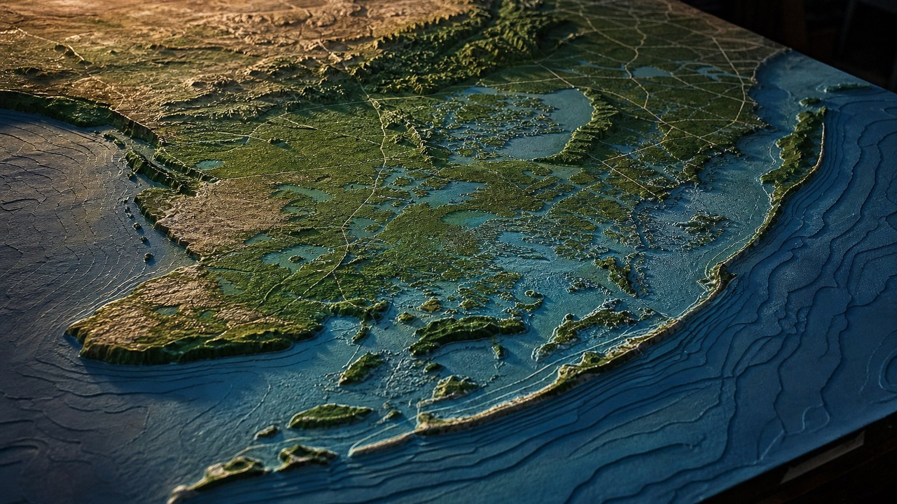
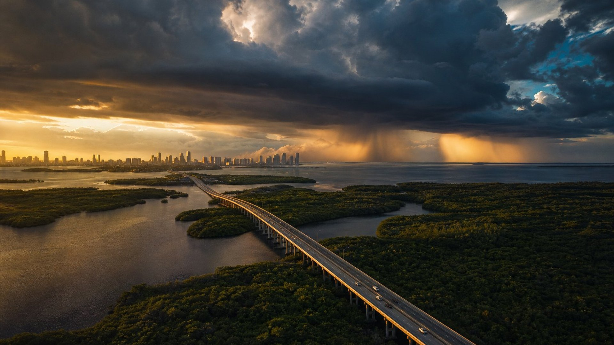
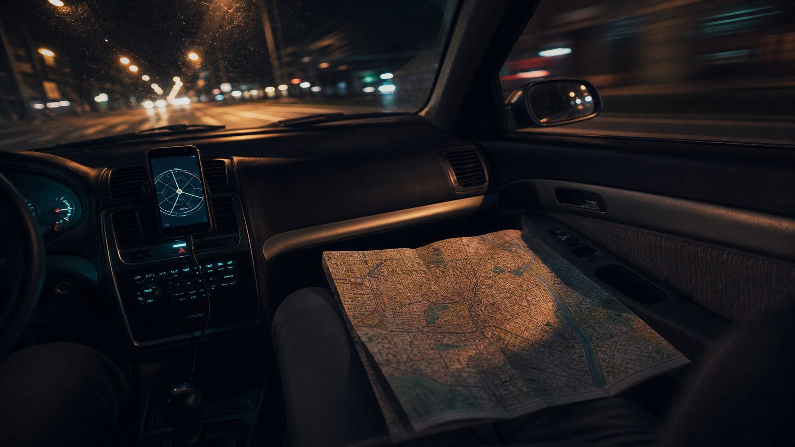
Trois itinéraires de découverte
La méthode qui revient dans les guides débutants et sur les forums : explorer par couches, pas au hasard. Voici trois tournées prêtes à l'emploi, construites sur les régions nommées.
- Tournée des deux premières heures — rester dans la zone de départ, apprendre les routes adjacentes, tester trois véhicules différents en circulation calme, repérer une planque et un magasin.
MAP-22 - Tournée côtière — Vice Beach, marina, puis descente vers les Keys : bateau, plongée, jetées. C'est là que les collectibles de bord de mer se ramassent le plus vite.
MAP-20 - Tournée intérieure — Grassrivers en airboat, Ambrosia par la route, mont Kalaga pour finir. Prévoyez une arme : la faune et les zones isolées ne pardonnent pas.
MAP-21
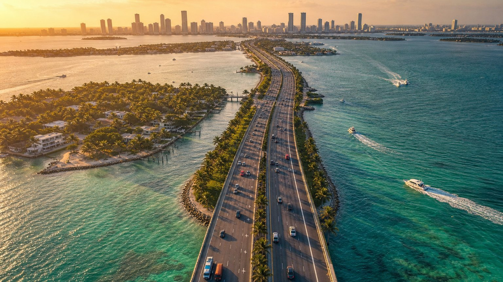
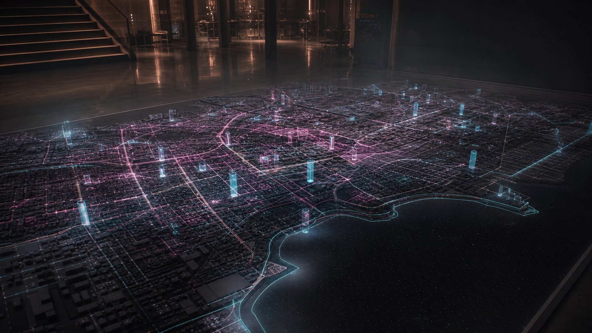
Repères à connaître sans se gâcher le jeu
- Les zones isolées du nord (mont Kalaga, campements) sont les plus rentables pour la chasse photo, mais aussi les plus hostiles.
- Les planques de quartier se repèrent de nuit : une enseigne allumée, deux véhicules stationnés.
- Les collectibles de bord de mer se ramassent plus vite à pied qu'en véhicule : la détection est plus fine.
SPOILER PRESSE · 18/11